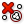

 Cull Duplicates
Component Index > Vector > Point > CullPt
Cull points that are coincident within tolerance
Inputs
| Name | ID | Description | Type |
|---|---|---|---|
| Points | P | Points to operate on | List of Point |
| Tolerance | T | Proximity tolerance distance | Number |
Outputs
| Name | ID | Description | Type |
|---|---|---|---|
| Points | P | Culled points | List of Point |
| Indices | I | Index map of culled points | List of Integer |
| Valence | V | Number of input points represented by this output point | List of Integer |
Copyright © 2016 Robert McNeel & Associates.